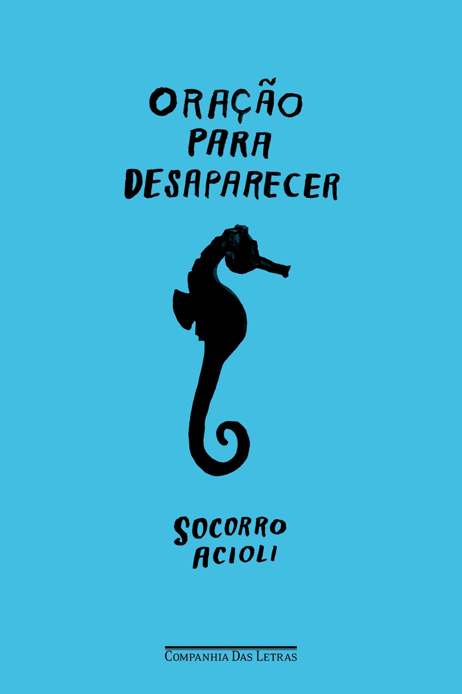

4nacionais curtos que quem usa o Livra adorou
todos com nota acima de 4,5

Todos com menos de 210 páginas.
Um por fim de semana e novembro tá resolvido.
100páginas
A hora da estrela
Clarice Lispector
★ 4,7no Livra · 6 avaliações
Macabéa sai do Nordeste para o Rio e mal tem consciência de que existe. Foi o último livro que Clarice escreveu.
125páginas
Canção para ninar menino grande
Conceição Evaristo
★ 5,0no Livra · 3 avaliações
Fio Jasmim, ferroviário bonito e carismático, contado pela memória das mulheres que passaram pela vida dele.
157páginas
Se Deus me chamar não vou
Mariana Salomão Carrara
★ 4,6no Livra · 4 avaliações
Maria Carmem tem 11 anos, quer ser escritora e resolve registrar tudo o que acontece com ela naquele ano.
208páginas
Oração para desaparecer
Socorro Acioli
★ 4,6no Livra · 7 avaliações
Uma mulher é desenterrada viva num jardim na fronteira entre Portugal e Espanha. Só traz um sotaque brasileiro e um colar de búzios.
Manda pra quem ainda acha que livro nacional é chato.
Qual você começa primeiro?
Responde com o número.
Salva pra montar o seu novembro.